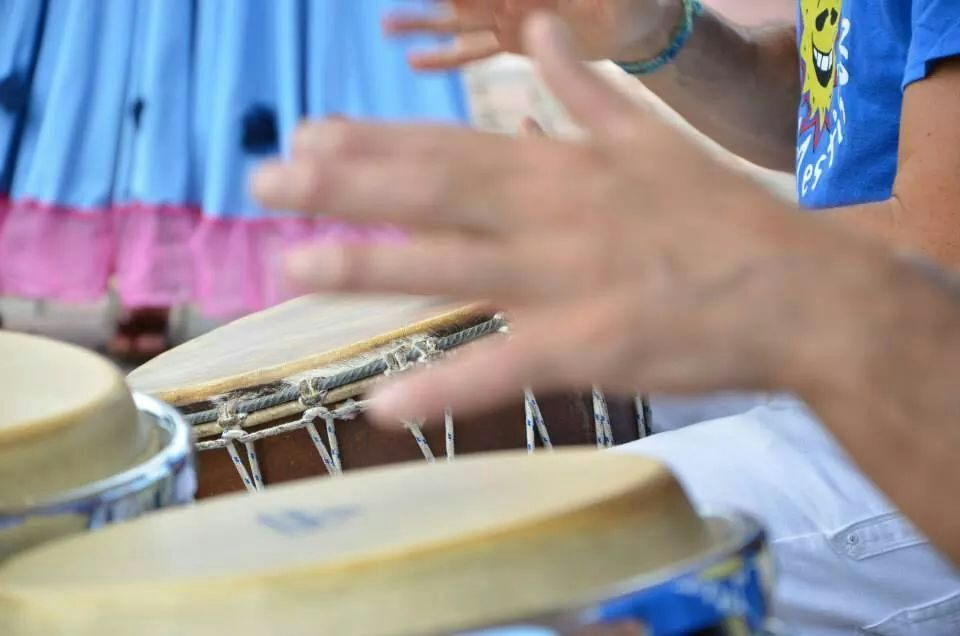
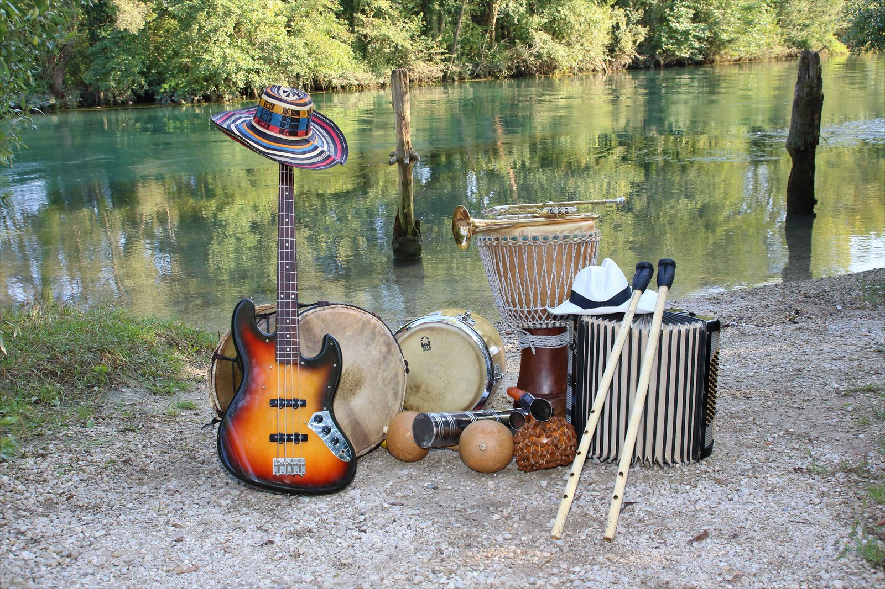

Energia pura
Allegri e coinvolgenti interpreti della musica folklorica afro-caraibica, vi accompagneranno in questo meraviglioso viaggio nell’entroterra e le calde coste del Caribe colombiano.
Mestisòn è energia pura. Una miscela esplosiva di ritmi, canti e danze dove gli strumenti a percussione tradizionali si mescolano sapientemente a strumenti più moderni come la chitarra, il basso e il sax.
Un connubio di sonorità tra il moderno e l’arcano dove cumbia, mapalé, són corrido e molti altri ritmi tradizionali si fondono al funky, reggae, rock e salsa. Costumi vivaci e allegre coreografie regalano uno spettacolo unico e originale.

Guardaci dal vivo
Da Treviso al Nord-Est
Il progetto musicale nasce nel 2011 a Treviso; direttore musicale della band è Luis Fernando Giraldo Bedoya (Pereira, Colombia). Numerose le esibizioni nei locali della provincia e le collaborazioni con diverse associazioni presenti sul territorio della Marca.
La band partecipa a diversi festival nel Nord-Est, tra cui Suoni di Marca nel 2011 e 2012, come band di supporto a Buena Vista Social Club, al festival internazionale Folk Est 2016–2017 e a Ritmi e Danze dal Mondo dal 2014 al 2017.
- Nasce Mestisòn a Treviso. Prima partecipazione a Suoni di Marca come supporto a Buena Vista Social Club.
- Di nuovo sul palco di Suoni di Marca.
- Ritmi e Danze dal Mondo.
- Festival internazionale Folk Est.
- Concerti, feste e festival tra la Marca e il Nord-Est.

